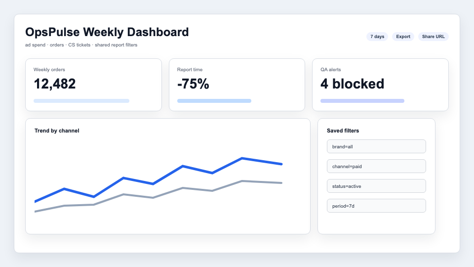
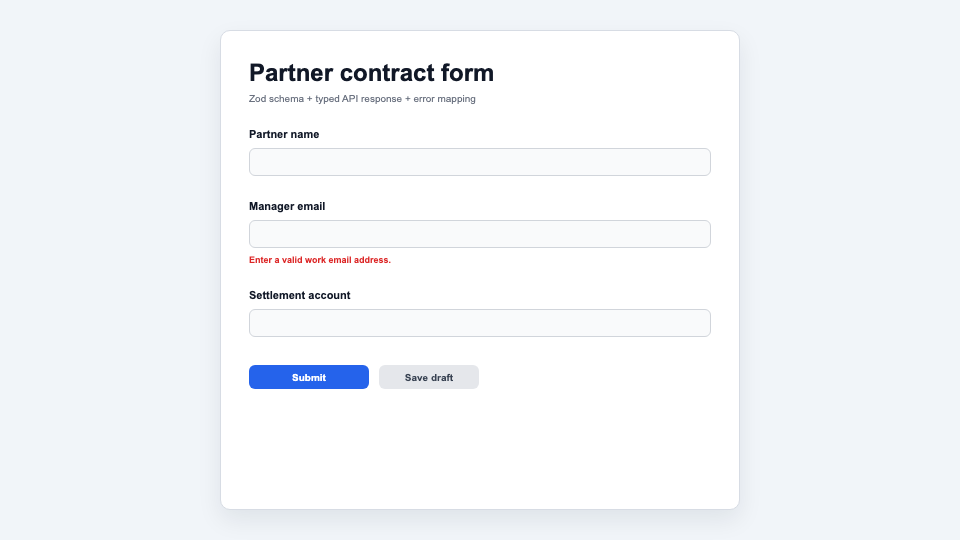

Example Product JD에 맞춘
정유진 프론트엔드 포트폴리오

프로젝트 목록

OpsPulse Dashboard
- 2p대시보드 화면과 문제 정의
- 3pTanStack Query + URL query 상태 설계
- 4p필터/리포트 화면과 결과

ReviewFlow Admin
- 5p검토 큐 화면과 운영자 문제
- 6p상세 패널, 액션 상태, 결과

FormGuard System
- 7p폼 검증과 컴포넌트 상태 규칙
- 8p에러 매핑과 QA 재현 체크리스트
- 1 -